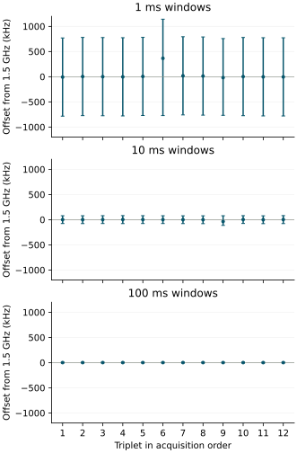

Physical results · 27 September 2026
Preparation 81920EAFC5EE returned all 3888 scheduled acquisitions and 36 counter windows. No acquisition guard stopped this boot. Voltage restoration, pin release, diagnostic recording and PMU restoration reported success. All six mixed calibrations were accepted. The diagnostic integrity criterion passed; complete target recognition did not: 430/432 medians were correct, with two wrong identities.
The electrical acquisition occupied 157.531 nominal seconds. The final recording section began 1441.650 seconds after trial entry, within the prescribed 26-minute session. The diagnostic started 0.236 seconds after the restoration checkpoint and occupied 1.333 seconds. These intervals use the recorded 54 MHz architectural timebase; they are not independent wall-clock measurements.
Ordered counter observations
All twelve windows at each duration were available. Every frequency bracket lay wholly above the unchanged 1 GHz lower limit. The acquisition-phase estimates ranged from 1499970445 to 1500029660 Hz; thermal codes ranged from 748 to 773, within the declared 728–818 interval. The previous transition toward 1 GHz did not recur.
| Window | Minimum | Median | Maximum |
|---|---|---|---|
| 1 ms | 1499.981260 | 1500.001276 | 1500.364900 |
| 10 ms | 1499.964018 | 1500.000277 | 1500.002444 |
| 100 ms | 1499.999875 | 1500.000064 | 1500.000268 |
Median endpoint-bracket widths were 1552.801, 155.534 and 15.556 kHz at 1, 10 and 100 ms respectively. The observed point-estimate ranges were 383640, 38426 and 393 Hz. The longer windows therefore produced narrower brackets and less point-estimate spread in this sequence. Window length also changes the sampled interval and workload; this observation does not isolate absolute clock accuracy or explain the earlier guard stop.

Result-read timing and recognition
All six paired round comparisons were available. Every one of the 3456 padded result windows met the declared 8000–8400 microsecond range. The slower condition ranged from 8004.722 to 8005.852 microseconds; the baseline padded condition from 8004.926 to 8006.037. Unpadded windows ranged from 2220.333 to 2333.926 microseconds.
| Read condition | Raw inside | Raw above | Correct medians | Wrong medians |
|---|---|---|---|---|
| Baseline | 424 | 8 | 144 | 0 |
| Slower, padded | 416 | 16 | 143 | 1 |
| Baseline, padded | 412 | 20 | 143 | 1 |
There were no below-interval readings, unavailable target readings or rejected target medians. The 44 above-interval readings comprised codes 2824 (17), 2832 (21) and 2848 (6). All 3888 repeated result-octet pairs agreed. Pair agreement does not prove distinct fresh analog conversions.
Subtracting baseline excursion counts from slower counts by round gives 5, 2, 1, 1, 0, −1, with median difference +1. Against baseline padded reads, the differences are 1, −2, 1, −1, −2, −1, with median −1. Slower transfers show no consistent reduction against both controls. The unpadded baseline had the fewest excursions in this boot, but eight raw excursions remained.
The baseline padded condition produced a wrong median in round 2 at zero-based acquisition ordinal 1205: readings 2832, 2832, 2813, median 2832, against frozen state-0 bounds 2784–2821. The slower condition produced another in round 3 at ordinal 1877: readings 2832, 2848, 2814, median 2832, against bounds 2788–2821. Both medians exceeded their intended upper bound by 11 codes and were assigned another identity.
Capture and validation
Two read-only 64 MiB captures matched SHA-256 36c7f22026e4e9e4061f3da5f910709f7eece9182fcf1aacf1c1ba9326aef658. The journal recovered 32586 recorded sectors and 118 empty reservations without decoding or identity errors. Configuration and instruction files, partition geometry and the master boot record are unchanged. Both FAT copies agree. Seven sectors outside the journal differ in boot-volume metadata; their writer and timing are not identified.
Six post-acquisition checks reconstruct the assessments, verify the separation between counter integrity and recognition, and reject corrupt journals, missing records and invalid counter windows. These checks add no physical observations. The pre-acquisition protocol and implementation remain preserved with the preparation.
Implications and next question
The ordered diagnostic and its recording path operated on the Pi. Longer windows reduced endpoint-placement uncertainty under the recorded conditions. This boot supplies no near-limit interval with which to explain the preceding guard stop; it neither disproves that stop nor justifies relaxing the operating guard.
A useful next investigation would retain the unpadded baseline and zero added pre-acquisition wait, and record ordered brackets at the acquisition guard itself. If the original guard stops acquisition, additional counter-only windows before voltage restoration could observe the immediate condition while preventing further voltage requests or ADC acquisitions. Such a diagnostic needs a bounded exit and guaranteed continuation into restoration; its workload could still alter the condition being observed. This is a proposed protocol, not an implemented or prepared run.
Reliable boundary recognition and independent conversion freshness remain open. The present comparison gives no basis for adopting slower result reads as their remedy. Those questions require their own controlled observations; narrower clock brackets alone do not establish either capability.
Question and rationale
The preceding result-read investigation stopped at acquisition attempt 1905. The last three interval-average CPU-frequency estimates were 1500005110, 1000001333 and 999992444 Hz. The last value fell 7556 Hz below the declared 1 GHz lower boundary. Thermal code 753 remained inside its accepted interval. The operating guard acted before another voltage request or ADC access, and restoration reported success.
This leaves two questions: does the acquisition-phase transition recur under the same schedule, and how do ordered cycle-rate estimates behave across observation lengths after restoration? A short-window estimate near a boundary may be sensitive to the timing of its endpoint reads. Longer observations and retained counter brackets can test that sensitivity without changing which electrical operations the existing guard permits.
The acquisition sequence is repeated unchanged. Additional observations occur only after the original-voltage restoration attempt, pin release and completion checkpoint. They therefore examine the restored condition, with a recorded link to the preceding guard decision; they do not reconstruct an unobserved pre-restoration interval.
Acquisition and diagnostic sequence
- Execute the existing six-round result-read schedule: 3888 scheduled observations, request 91 for all held-out readings, the same three read conditions and balanced orders. Zero added wait before acquisition, 1 ms pre-ADC settling, reference construction, voltage limits and the 1–1.55 GHz operating guard remain unchanged.
- On completion or failure, perform the existing restoration and release path and preserve checkpoint 8. The frequency diagnostic requires acquisition to have been invoked, restoration and release to report success, and checkpoint recording to report no failure. Otherwise record an unavailable diagnostic with its reason.
- Use a separate condition report to enable the same PMU cycle-counting configuration. Setup thermal or counter failure prevents the diagnostic windows. Frequency status 4 permits passive counter observation only; it does not permit another electrical acquisition.
- Acquire 36 windows, twelve each at minimum lengths of 1, 10 and 100 ms. Each triplet contains all three lengths. Orders are
1,10,100;10,100,1;100,1,10;1,100,10;10,1,100;100,10,1, then the same six orders again. Each length occurs four times in each position. - Restore the saved PMU controls. Record the diagnostic in section 9, then retain the existing acquisition report, calibration, rows and final trial report. No further PMIC transaction is issued by the diagnostic.
Each cycle-counter endpoint is bracketed by two architectural counter observations. An ISB separates successive endpoint reads: counter-before, cycle counter, counter-after. The window begins after the first bracket and waits for its declared tick interval before the final bracket. Both CNTFRQ observations, both raw thermal observations, PMCR and PMCCFILTR are retained. Each diagnostic window's polling loop has a fixed ceiling of 228 iterations; exhaustion records failure. Setup retains the existing condition observation. A changed or unavailable timebase, or thermal value outside the existing raw-code interval 728–818, stops the diagnostic sequence.
These instructions follow the ordering requirement discussed in Arm's Generic Timer documentation. Counter frequency is reported configuration. No external clock or oscillator calibration is added.
Declared assessment
For each available window, retain its raw endpoints, actual interval and cycle increment. Let C be the cycle increment and F the reported architectural counter frequency. The leading-counter estimate is floor(C × F / (end-before − start-before)). The lower bracket uses end-after − start-before; the upper bracket uses end-before − start-after. Round the lower value downward and the upper value upward. Under ordered reads and continuous counters, these brackets account for endpoint placement; they do not quantify absolute clock error.
Report all twelve scheduled observations per length. For each length, show available and unavailable counts; minimum, median and maximum point estimates; point estimates below the original 1 GHz limit; and the counts of brackets wholly below, straddling or wholly above that limit. A bracket touching the limit counts as straddling. Retain triplet and position so that changing frequency during the sequence is not mistaken for a window-length effect.
The diagnostic integrity criterion requires all 36 windows with ordered endpoints, positive cycle increments, an unchanged valid timebase, sufficient duration, accepted thermal observations, the intended counter controls and successful PMU restoration. Missing or invalid windows remain unavailable. This criterion is independent of the electrical recognition and complete-acquisition criteria, which retain the preceding declared rules.
Also report every acquisition-phase guard failure, the last retained original guard interval, thermal data and restoration status. A repeated acquisition stop is evidence of recurrence under this schedule. Stable brackets below the limit after restoration would support a below-limit rate persisting into that later phase. Brackets straddling the limit would leave the boundary unresolved at the available endpoint resolution. A return to approximately 1.5 GHz would show that the later condition differs; it would not identify the cause of the earlier transition.
Any apparent dependence on window length must be reported by position and triplet. Sequential windows sample different intervals, so a changing rate remains an alternative explanation. No filtering, revised threshold, retry or retrospective calibration is applied.
SEIGRASM execution and recording
The counter-window operation contains 199 literal AArch64 instruction words. Its first entry delegates to the existing electrical sequence and then conditionally acquires the diagnostic. Its second entry records one ordered window. It retains the original electrical return status separately and uses the existing native senary record construction and verified SD persistence.
Configuration schema 21 identifies this protocol. The diagnostic consists of a 32-word header and setup snapshot plus 36 rows of 16 words: 608 words in 61 sectors. The journal reservation and boot partition geometry are unchanged. Native streaming and persistence each change one section-limit comparison from eight to nine; previous section identities retain their behavior. The original condition, sample, readout, calibration and restoration instruction regions remain unchanged.
PC packaging places literal instructions and contexts without compiling the target from another language. Existing boot firmware still supplies entry and initial hardware state. The independent assessment reads the preserved journal and reconstructs the declared comparisons. Supplied-response checks cover endpoint ordering, boundary values, timebase and thermal failure, stalled-counter exit, unchanged electrical stop, restoration gating and native journal recovery.
Interpretation limits
Counter observations start after restoration and checkpoint recording. That intervening work, changed voltage request and elapsed time may alter the operating condition. This experiment cannot prove that a low rate persisted throughout that gap, nor identify firmware, supply or thermal causation. It does not change PLL settings or replace firmware.
The extra observations are active busy loops, not passive external measurements. Their ordering overhead and observation length are part of the workload. The architectural timebase and PMU may have limitations not detected by these checks. All inference remains conditional on the recorded controls and continuity; absolute frequency accuracy remains unqualified.
A guard stop is retained even if the later diagnostic reports a different rate. This investigation does not relax an electrical operating limit, prove fresh ADC conversions, or establish native multilevel computation or Hyphos-made Seigsit creation.
Run duration
The established 26-minute powered session is retained. The diagnostic schedules approximately 1.332 seconds of minimum observation intervals and adds 61 journal sectors. Earlier full acquisitions reached their final recording section within the prescribed window. Returned counters determine the actual duration; early guard stops may shorten acquisition.
Preparation
Preparation 81920EAFC5EE passed 330 software checks with no skips or source changes during validation. The archive preserves all 121 validated source files and the media writer.
The 64 MiB image was installed with 4096 verified writes of 16 KiB and two matching complete readbacks while the volume remained locked. Ejection succeeded. The pre-write backup matches the preserved preceding return. All 32704 journal reservations were empty and bound to this identity before acquisition. The pre-acquisition protocol is preserved unchanged.